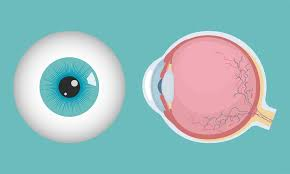
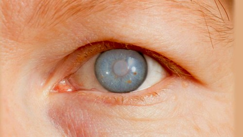
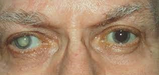
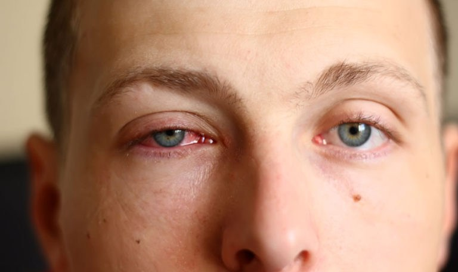
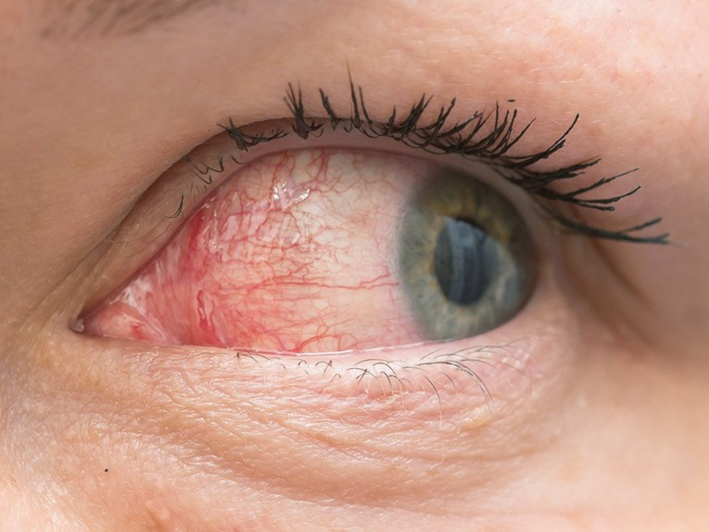
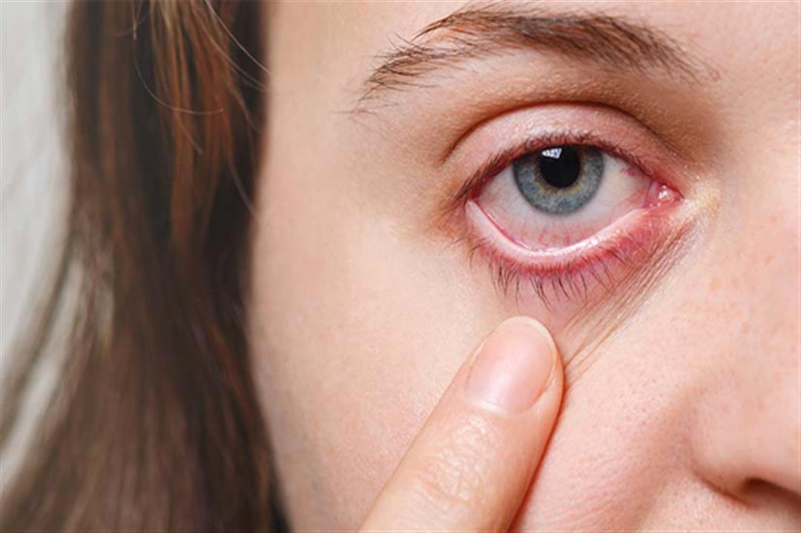
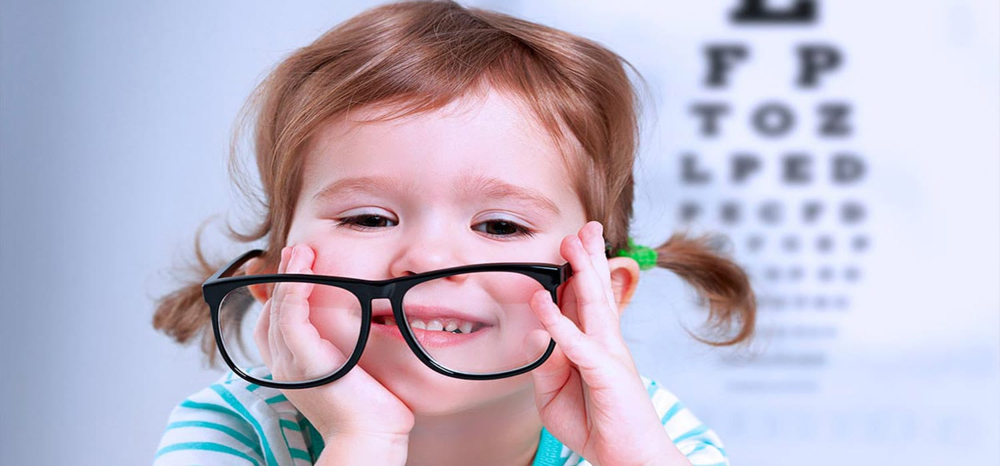

إكتشاف منتج معجزة للتخلص من مشاكل العيون و إرهاق العين و مشاكل البصر .
تعد مشاكل العيون من القضايا الصحية الشائعة التي تؤثر على الكثير من الأشخاص في جميع أنحاء العالم. قد تكون هذه المشاكل نتيجة لأسباب مختلفة مثل العوامل الوراثية والعوامل البيئية و مشاكل العيون. في هذا المقال، سنتناول بعضًا من أشهر مشاكل العيون وأعراضها التي يجب أن يكون لدينا الوعي بها.
-
النظر الطويل والنظر القصير (القرنية المعوجة):

مشكلة شائعة تتعلق بتركيز العين وتركيز الضوء على الشبكية. يعاني الأشخاص المصابون بالنظر الطويل من صعوبة في رؤية الأشياء القريبة، بينما يعاني الأشخاص المصابون بالنظر القصير من صعوبة في رؤية الأشياء البعيدة.
-
الزرق (الجلوكوما):

هذه المشكلة تحدث عندما يرتفع ضغط السائل في العين، مما يؤدي إلى ضرر تدريجي للعصب البصري. تكون أعراض الزرق غير واضحة في المراحل المبكرة، ولكن مع مرور الوقت، يمكن أن يؤدي الإهمال إلى فقدان الرؤية الدائم.
-
إعتام عدسة العين

تحدث عندما يتكون غشاء ضبابي في عدسة العين، مما يعوق تدفق الضوء ويسبب تشوهًا في الرؤية. الأعراض الشائعة للكاتاراكت تشمل الرؤية الضبابية، والتحسن المؤقت في الرؤية عند استخدام الإضاءة القوية، وتقلبات في حساسية العين للضوء.
-
التهاب الملتحمة:

هو التهاب الغشاء الملتحمي الذي يغطي الجزء الأمامي من العين والجفن. تشمل أعراض التهاب الملتحمة الحكة، والاحمرار، والتورم، والإفرازات العينية، وحساسية العين للضوء.
-
الجفاف العيني:

تحدث عندما تفتقر العين إلى الرطوبة الكافية أو عندما يكون نظام إنتاج الدموع غير فعال. تعتبر الحكة، والشعور بالحرقة، والإحساس بوجود جسم غريب، وزيادة الإفراز العيني بعض الأعراض الشائعة للجفاف العيني.
في تقرير اليوم، سنحاول معرفة كيف يمكن أن ينقذ هذا المنتج العديد من الناس وكيف للجزائريين الحصول عليه بخصم كبير.
تتعرض العيون للعديد من المشاكل التي تؤثر على نظرنا وصحتها العامة. قد تكون هذه المشاكل مزعجة ومؤلمة، وتتطلب حلاً فوريًا للتخلص منها. في هذا المقال، سنتحدث مع الطبيبة الروسية إيلينا أناتوليفنا عن منتج فعّال للتخلص من مشاكل العيون و حماية العيون ، حيث ستقوم مراسلة روسية بإجراء حوار صحفي مع الطبيبة الروسية لتشرح لنا فوائد المنتج ومكوناته.

"تمت ترجمة اللقاء الصحفي من اللغة الروسية للغة العربية "
المراسلة مرحبًا دكتور! نشكرك على قبولك لهذا الحوار. يبدو أنه يوجد منتج حظى بشهرة شعبية كبيرة في الأونة الأخيرة للتخلص من مشاكل العيون و الحماية من مشاكل العيون أيضاً و هو منتج مثير للاهتمام للكثير من الناس . هل يمكنك أن تشرح لنا ما هو هذا المنتج وكيف يمكنه مساعدة الأشخاص الذين يعانون من مشاكل العيون؟
تحتل مشاكل العيون واحدة من الأماكن الرئيسية من حيث انتشارها بين السكان في في الجزائر . حاليًا ، هناك زيادة سريعة في مثل هذه المشاكل ، والتي ترتبط بشكل أساسي بتغييرات نمط الحياة: الضغط البصري المفرط ، والإصابات ، ونمط الحياة غير اللائق ، المشاكل الوراثية ، والإجهاد ، والإرهاق - كل هذا أدى إلى حقيقة أن مشاكل العيون أصبحت أكثير إنتشاراً حتى لدى صغار السن وأنها شائعة بشكل متزايد ، ليس فقط في كبار السن ، ولكن أيضًا بين الشباب. من الأعراض الشائعة وجود ألم ذي طبيعة مختلفة ، موضعي في العين أو في المناطق المجاورة ، احمرار العين ، رهاب الضوء ، وجود إفرازات من العين ، تمزق ، وعيوب تجميلية مختلفة.
لفترة طويلة كان يُعتقد أنه لا يمكن التخلص من مشاكل الرؤية ، ولكن يمكن على الأقل وجود حل مؤقت كالنظارات أو العدسات أو التصحيح بالليزر. كل هذه الطرق فعالة ، لكنها في الواقع لا تحل المشكلة و لكن تسبب أيضًا عددًا من المضاعفات. لذلك ، مع مرور الوقت ، سوف يتارجع نظرك مرة أخرى ، وبشكل أسرع.
الطبيبة الروسية : بالطبع، إن هذا المنتج هو نتاج الأبحاث المتقدمة في مجال صحة العيون. يحتوي على مكونات فعّالة وطبيعية تساهم في تحسين الصحة العامة للعينين. يساعد المنتج على التخلص من المشاكل العينية الشائعة مثل الزرق، الجفن العائد، وتهيج العيون، وكذلك للمحافظة على صحة العين وتقوية البصر.
المراسلة أخبرنا من فضلك ما هو السبب الذي يجعل مشاكل العيون منتشرة حتى لدى الشباب مؤخراً ؟
الطبيبة اسمحوا لي أن أبدأ مع سبب انخفاض بصر الشخص بشكل عام ، دعونا نلقي نظرة على جوهر المشكلة. يمكن تقسيم جميع أسباب ضعف البصر بشكل مشروط إلى ثلاث مجموعات كبيرة:
- مشاكل الجهاز البصري نفسه (القرنية ، العدسة ، شبكية العين)
- المشاكل بالقرب من أنسجة العين (بما في ذلك عضلات العين والأنسجة الرخوة في المدار ، بما في ذلك الحول)
- المشاكل الصحية المصاحبة (لأعضاء وأنظمة أخرى).
- تشوه العدسة أو فقدان قدرتها على تغيير شكلها (قصر النظر ، طول النظر ، اللابؤرية)
- إصابات العين (كدمات ، حروق ، شقوق ، إلخ)
- إعتام عدسة العين (غشاوة العدسة)
- الجلوكوما (زيادة ضغط العين).
- مشاكل الشبكية (انفصالها ، تمزقها ، تنكسها البقعي)
- التهاب القرنية (معدي ، حساسية ، المناعة الذاتية ، سام) ،
يحدث ضعف البصر أيضًا في وجود مشاكل صحية مثل السكري ، مشاكل الغدة الدرقية ، والأرق ، ونقص وبري ، وتنخر العظم ، والمشاكل الفيروسية والمعدية ، وارتفاع ضغط الدم ، وغيرها الكثير.
بطبيعة الحال ، فإن تقدم البشرية وطريقة الحياة الحالية للإنسان الحديث قد أثرت بشدة على نمو مشاكل الرؤية. هذه أعراض عديدة ، إرهاق ، إجهاد ، عادات سيئة ، سوء تغذية ، إلخ. لهذا السبب نرى الآن مثل هذه المشاكل المحزنة.
المراسلة : ما مدى خطورة ضعف البصر؟
الطبيبة : في المرحلة الأولية تكون أعراض ضعف البصر خفيفة. معظم الأشخاص لا ينتبهون للأعراض ، والأعراض نفسها تأتي تذهب من حيت لأخر .
كان هذا مجرد عمل بالنسبة لهم. إنهم لا يريدون حقًا علاج مرضاهم.
أهم الأعراض بالطبع التدهور المفاجئ للرؤية نفسها. فجأة يصبح من الصعب على الشخص التركيز على الأشياء البعيدة والقريبة. من الصعب الحفاظ على التركيز ، و الأشياء غير واضحة.
و هذه بعض الأعراض التي يمكن حدوثها إذا تم إهمال مشاكل العين :
- ازدواج الرؤية وخاصة في المساء
- إحساس "برمل" في العينين ، وعدم ارتياح
- ظهور "الذباب" ، دوائر قزحية اللون في العيون.
المراسلة : اخبرنا من فضلك ما هو هذا المنتج ؟
الطبيبة :هذا المنتج إسمه Oculus vision و هو منتج طبيعي 100% في شكل حبوب و هو مكمل غذائي ليس له مثيل الأن في مجال مشاكل العيون .

المراسلة : أخبرنا من فضلك ما هي مكونات "Oculus Vision " ؟
الطبيبة : بدايةً احب أن اقول للجميع ان المنتج طبيعي 100% و لا يوجد به مواد كيميائية ضارة على عكس الكثير من المنتجات الأن الموجودة .
و مكونات المنتج هي :
المراسلة : ما هي فوائد Oculus vision ؟
الطبيبة : فوائده كثيرة و لكن سأذكر لكي أهمهم
- يساعد في القضاء على قصر النظر و طول النظر
- يساعد على التخلص من ألام العديد من المشاكل مثل : التهاب الملتحمة - الزرق (الجلوكوما): - تهيج العيون - جفاف العين
- دعم صحة العين
- تحسين حدة البصر بمضادات الأكسدة والمغذيات الوقائية مثل اللوتين
- بالإضافة إلى ذلك ، يساعد Oculus Vision في مكافحة إجهاد العين وإبطاء تطور التنكس البقعي المرتبط بالعمر.
المراسلة : ما هي طريقة إستخدام Oculus Vision ؟
الطبيبة : تناول حبة واحدة يومياً مع كوب كبير من الماء مع وجبات الطعام .
كيف يمكنكم شراء Oculus vision في الجزائر ؟
كل ما عليكم هو ملئ نموذج الطلب الرسمي بالأسفل للحصول على Oculus Vision بتخفيض 50% لكل سكان الجزائر و أخر يوم للعمل بهذا التخفيض هو يوم :
نموذج الطلب الرسمي

عند شرائك دورة Oculus Vision
مكمل غذائي هاااايل!جابوه في نهار،بديت نستعمل فيه عندي يومين و راني نحس بتحسن،راح الجفاف من نهار اول ،راني مخلوووع
انا نخدم بزاااف بكمبيوتر،و عيني تتعب بزاااف و تنشف !حبيت نسيي "Oculus Vision"راني نشرب فيه سماانة كاملة و مستنڜ هذي نتيجة !!!عيني مراهش تتعب !!! انصح كل
شكرا لعملكم ومعلوماتكم . سأطلبه الآن.
بارح سمعت يحكو عن مكمل OculusVision,قالو هايل،نسييه و نشوف
لقد طلبته بالفعل و إستلمته و كان التعامل رائع مع الشركة الموزعة و سوف اجربه و سأكتب عن تجرتي لاحقاً
طلبت. المنتج سأستلمه غدا.
آمل أن يكون لدي وقت لشراء Oculus Vision بسعر مخفض.
ما شفت في سيت ان دفع مور الاستلام و نعمر طلب لنفسي تاني، درت كوموند لختي عندها شهرين و هي تعاني من مشكل ديال عينيها، والله ساعدنا هاد المكمل الغداءي
انا متحمسة لتجربته :) انا أيضا طلبته .
كلشي ولالنا طبيعي، ميمتي تعاني معينيها نكمونديهولها لها تان، نشالله يساعدها
لقد كنت اعاني من الصداع المستمر بسبب نظري و الأن بعد تجربتي لهذا المنتج بضعة أسابيع شعرت بإختلاف تام .أنصح به الجميع !